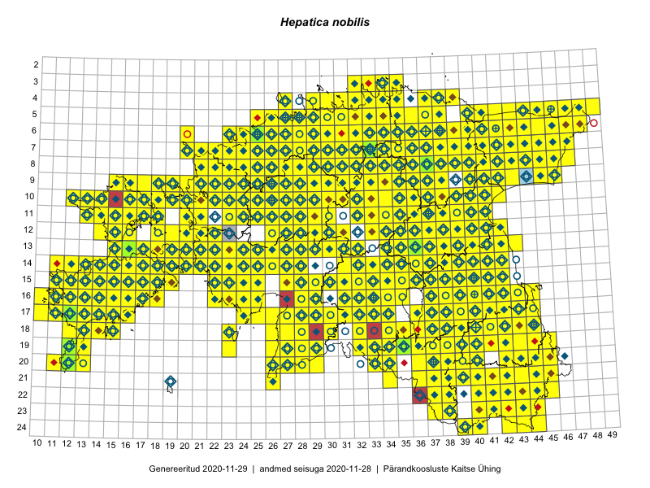

Hepatica nobilis
Uuendatud: 2016-12-01
Kaardile koondatud taksonid: Hepatica nobilis Schreb.

Kaart põhineb 1156 kirjel, neist vaatlusi 1155 ja eksemplare 1.
Kuvatud viited 20 esimesele andmebaasikirjele, ülejäänud PlutoFis
- Thea Kull: 2015-04-27: 07-45: ala
- Tiit Hallikma, Toomas Kukk, Indrek Tammekänd: 2015-06-09: 12-28: ala
- Malle Leht: 2015-07-09: : ala
- Meeli Mesipuu, Kadri Tali: 2015-04-30: 17-40: ala
- Meeli Mesipuu, Kadri Tali: 2015-04-30: 17-39: ala
- Meeli Mesipuu, Liina Oja: 2015-04-27: 08-43: ala
- Peedu Saar: 2015-05-09: 13-30: ala
- Peedu Saar, Timo Luhamäe: 2015-05-09: 12-28: ala
- Peedu Saar, Timo Luhamäe: 2015-05-09: 12-29: ala
- Peedu Saar, Timo Luhamäe: 2015-05-10: 12-30: ala
- Peedu Saar, Timo Luhamäe: 2015-05-11: 11-36: ala
- Peedu Saar, Timo Luhamäe: 2015-05-11: 12-36: ala
- Peedu Saar, Timo Luhamäe: 2015-05-11: 12-37: ala
- Peedu Saar, Timo Luhamäe: 2015-05-12: 07-35: ala
- Peedu Saar, Timo Luhamäe: 2015-05-12: 07-36: ala
- Peedu Saar, Timo Luhamäe: 2015-05-13: 06-39: ala
- Peedu Saar, Timo Luhamäe: 2015-05-13: 06-40: ala
- Peedu Saar, Timo Luhamäe: 2015-05-13: 07-39: ala
- Peedu Saar: 2015-05-14: 09-43: ala
- Peedu Saar: 2015-05-14: 10-42: ala